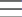
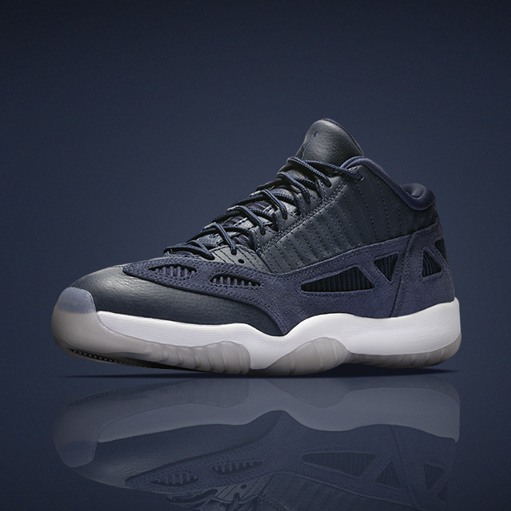

에어 조던 11 레트로 로우 IE‘OBSIDIAN’
링크
여름 시즌에 최상의 편안함과 스타일.
멋스러운 유선형 디자인의 옵시디언 컬러로 만나다.
나이키 에어맥스 TINY 90
에어맥스 패밀리의 새로운 멤버를 만나보세요.
나이키 크롬 블러쉬 컬렉션
강인함이 완성하는 스타일.
파스텔 톤과 차분한 그레이 컬러의
조화로운 컬렉션으로 당신의 다음 운동,
그리고 스포티한 주말을 완성하세요.